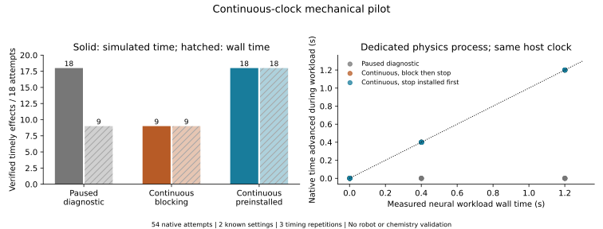
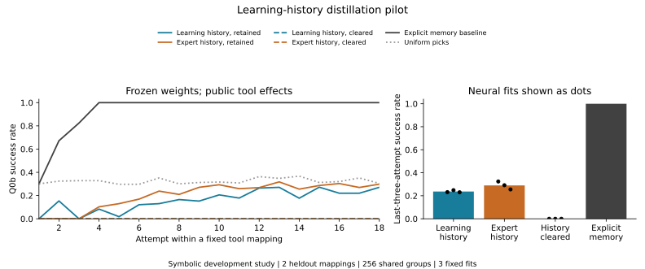

原生计量
采样时钟、控制提交、实际作用和物理读回分别留证。接触与低漂移不能自动证明独立承重。
VERIFIED EXPERIENCE → SHARED POLICY · UPDATED 2026.10.14
让失败与恢复经验进入共享策略，先要知道动作何时真正生效。这里保留每轮已执行实验、负结果与下一步，不把命令回执、模型预测或漂亮画面当成物理完成。
当前阶段：学习历史试点未达到继续条件；持续时钟机械组件通过审计。独立原生采集已完成，严格保持条件未通过，训练准入为0；机器人学习、真实硬件与化学终点仍未验收。
两轮均为开发实验。首轮训练与负结果完整列于下方；时钟和原生采集阶段没有训练新策略。
02 · CONTINUOUS NATIVE CLOCK
同一已知停止技能，在两种机械响应、三档实际CPU推理负载与三次重复下比较三种执行方式。两个时钟分别计分；全部54次都在分母中。
正在读取已核验的实验摘要。
展示固定条件的实际计数，筛选不会新增样本或重新执行实验。TRUE、FALSE和UNKNOWN分别保留。

RECORDED STATES · NO NEW ROLLOUT
固定较慢响应、1.2秒负载、重复0的三个独立原记录。图展示轴A的实际转速；不是机器人视频，也没有重跑或补造物理轨迹。
归因边界：冻结神经网络仅产生实测CPU工作负载，输出不选动作。提前安装组更早提交同一个指令，具有不同的执行时序能力；这些结果不证明神经策略优势。
01 · LEARNING-HISTORY DISTILLATION
首轮在Q0b符号执行器中，用四个工具映射训练、两个完整映射留出。两种配方各三个种子、固定600次更新；测试时权重冻结。显式记忆利用同样公开工具效果，是保留的强基线。
| 方法 | 最后三次成功率 | 结论 |
|---|---|---|
| 完整学习历史，保留历史 | 23.70% | 未达到80%可靠性门槛 |
| 专家成功历史，保留历史 | 29.04% | 学习历史配方未超过此对照 |
| 学习历史，清空历史 | 0.00% | 训练多数路由与两个留出映射全目标不一致 |
| 显式候选集合记忆 | 100.00% | 已知工具映射问题有很强的普通解法 |

两配方各9,216监督动作；专家配方另需2,313次准备尝试。完整学习历史27,033个符号物理动作，专家配方33,984个。配方比较没有隔离失败reward，也没有匹配采集成本。
03 · NATIVE INSTRUMENTATION
独立版本完成1条已见配置原生采集：14,007个任务步、28,016条物理读回和177组RGB／深度记录。
严格采样保持连续11个点未通过，完整时间＋保持为FALSE；独立承重UNKNOWN，成功训练准入0。独立审计披露两项读取修正，结果为conditional pass，标记为同模型家族provisional。
采样时钟、控制提交、实际作用和物理读回分别留证。接触与低漂移不能自动证明独立承重。
只使用提交前可获得的观测。成功BC准入与失败／恢复transition用途分开，缺证据保留UNKNOWN。
先共享合同／历史条件DP与学生状态回标；保持强规则、相同教师预算与任务留出，再决定RL／OPD。
原生预检是仿真采集接口检查，不是新机器人技能、实时LLM闭环或化学成功。主项目其他原生实验保持独立分母，见完整研究主页。
OPEN EVIDENCE · NEGATIVE RESULTS RETAINED
网页发布经过筛选的摘要、论文图与选定记录。完整原始矩阵保存在科研工作区；这里不是全部数据或策略检查点发布。审阅采用新上下文、同模型家族，标记为provisional。